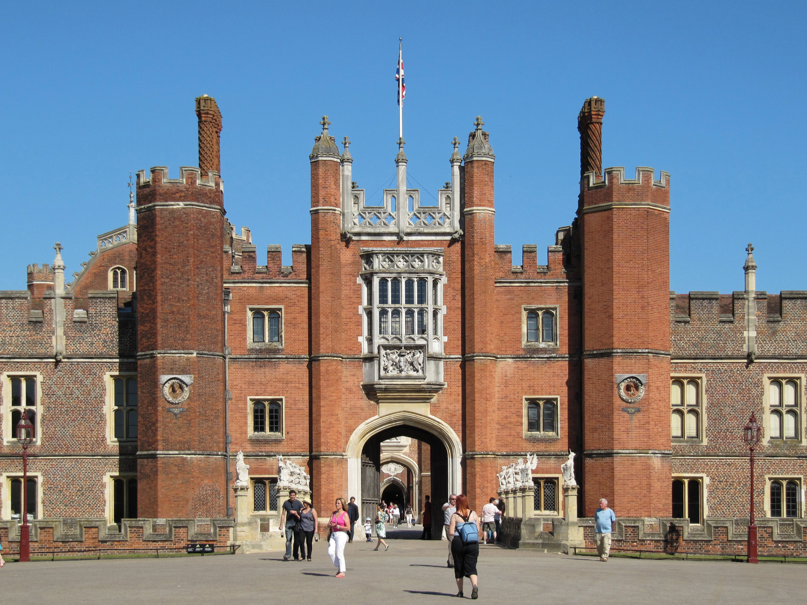

A picture of the Hampton Court Palace where Macbeth was likely originally performed for King James I of England.
One of the main reasons Shakespeare wrote Macbeth is as a tribute to King James I of England. Macbeth contains numerous references to him including:
Furthermore, Shakespeare renamed his acting company from the Lord Chamberlain's Men to the King's Men.
A picture of the Hampton Court Palace where Macbeth was likely originally performed for King James I of England.
Shakespeare wanted to keep the patronage from King James I of England for his acting company the King's Men. By keeping the King's favor through references in plays like Macbeth, Shakespeare hoped the King would continue to fund his acting company.

A painting showing the three witches in Macbeth.